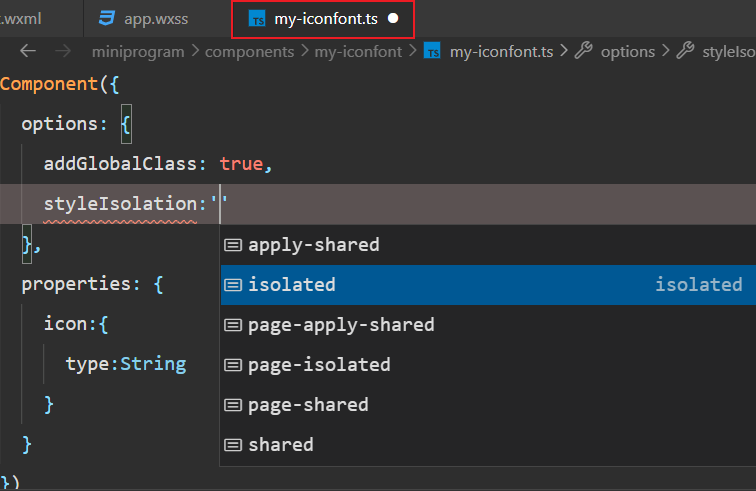

概述 Overview
- 样式隔离 - 默认情况下，组件的样式仅仅作用于当前组件
- 选择器 - 尽量使用类选择器，不要使用标签选择器、id选择器、属性选择器
- 唯一根节点 - 保持唯一根节点；且样式类名同组件名保持一致
- app.wxss 的全局样式会影响到组件样式，如类选择器、标签选择器；id选择器、属性选择器请确认再使用
- 可以直接使用外部 CSS 变量！！！
- 使用时，直接为组件指定样式；但是建议额外使用一个容器组件，便于布局
- 更多信息，请参考 组件模板和样式
样式隔离 Isolated
- 配置 options 选项
- isolated：启用样式隔离，在自定义组件内外，使用 class 指定的样式将不会相互影响；默认值
- apply-shared：页面 wxss 样式将影响到自定义组件，但自定义组件 wxss 中指定的样式不会影响页面
- shared：页面 wxss 样式将影响到自定义组件，自定义组件 wxss 中指定的样式也会影响页面和其他设置了 apply-shared 或 shared 的自定义组件
- 不建议修改配置，避免后期样式冲突

组件样式配置
外部样式类 ExternalClasses
- 配置 externalClasses 选项
- 以数组的形式指定需要使用的外部的样式类
- 类多的情况下，比较繁琐，需要一一指定
- 子组件无法修改调整外部类
- 定义组件
externalClasses: ['card-item']
使用组件
<copyright class="warn" card-item='card-item'></copyright>
字体图标 Iconfont
@import './utils/iconfont.wxss';
组件中无法通过外部样式类使用
需要使用的组件都需要重新导入 - 注意路径
@import '../../utils/iconfont.wxss';
微信小程序会做去重处理，不会增加小程序的体积
更多信息，请参考 阿里字体图标 iconfont
简单粗暴型：直接引入对应的样式文件；可以调整或修改外部样式
[] 封装空购物车组件
<view class="empty-cart">
<text class="iconfont icon-cart-empty txt-xxxl"></text>
<text>购物车空空的，去逛逛吧</text>
</view>
样式：
iconfont 样式文件已经在 app.wxss 中引入；为了在组件内部使用 iconfont，需要显式的再次引入字体图标的样式文件
其他样式，在组件内定义
// 仅仅使用字体图标样式
@import '../../iconfont.wxss';
// 简单粗暴型 - 引入主样式文件
@import '../../app.wxss';
.empty-cart {
display: flex;
flex-direction: column;
justify-content: center;
align-items: center;
}